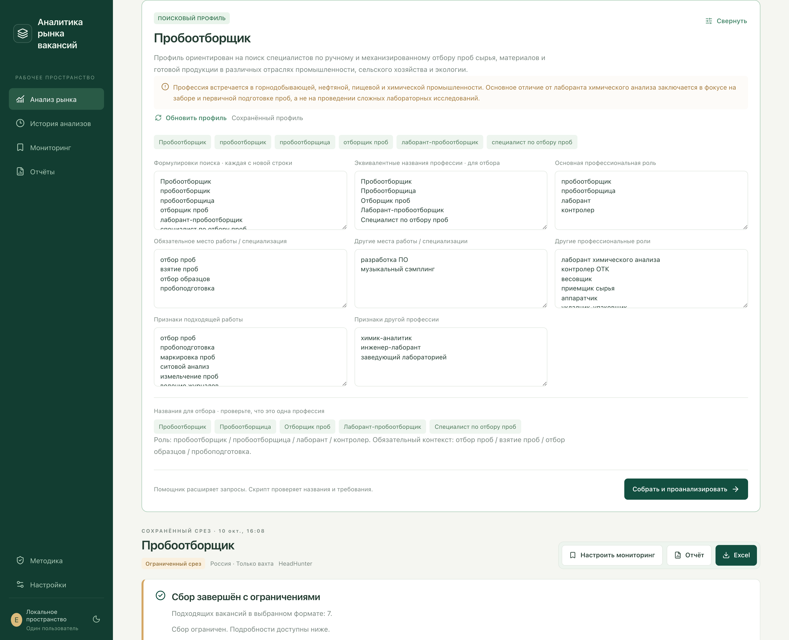

MARKETLENS / АНАЛИТИКА РЫНКА ВАКАНСИЙ
Аналитика рынка труда по профессиям
MarketLens помогает работодателю изучить рынок перед открытием вакансии: узнать, какие компании ищут аналогичных специалистов, какие зарплаты предлагают и какие требования предъявляют кандидатам.
Для подготовки поиска используется языковая модель Gemini. Она подбирает альтернативные названия профессии, ключевые слова и исключения, помогая точнее находить подходящие объявления. Далее приложение собирает реальные вакансии с платформ HeadHunter и Работа России, а программные алгоритмы обрабатывают данные и формируют наглядную аналитику.
Работающая демоверсия · Проверенная функциональность

01 / ЗАДАЧА
Изучить рынок и определить конкурентные условия найма
Перед поиском сотрудника важно понимать, какие условия предлагают другие работодатели: уровень зарплат, формат работы, необходимые навыки, квалификацию и опыт.
При этом одна профессия может встречаться под разными названиями, а обычный поиск нередко включает неподходящие должности. Задача — объединить интеллектуальную подготовку запросов, точный отбор вакансий и анализ предложений в одном инструменте.
Результаты должны помогать работодателю определять конкурентную зарплату, формировать требования и обоснованно выбирать условия будущей вакансии.
02 / РЕШЕНИЕ
Как работает MarketLens
Искусственный интеллект для точного поиска
Пользователь указывает профессию, после чего языковая модель Gemini через API формирует поисковый профиль: подбирает синонимы, альтернативные названия должности, признаки специализации, ключевые слова и исключения.
Сформированный профиль можно проверить и скорректировать перед запуском поиска, уточнив критерии отбора и исключив нерелевантные направления.
Роль ИИ ограничена подготовкой поиска. Дальнейший сбор, фильтрация, обработка вакансий и расчёт показателей выполняются программными алгоритмами. Собранные объявления не передаются языковой модели.

Этапы работы приложения
Наглядная аналитика рынка
Приложение преобразует собранные вакансии в интерактивные графики и сводные показатели. Можно изучить распределение зарплат, количество предложений, наиболее активных работодателей и географию вакансий.
Зарплатные данные учитываются с разделением по валютам, периодам оплаты и налоговым условиям. Фильтры позволяют сравнивать отдельные компании и сегменты рынка без повторного сбора данных.
При расчётах учитываются особенности зарплатных предложений: суммы «от» и «до» анализируются отдельно, а среднее значение полной зарплатной вилки рассчитывается только при наличии обеих границ.


Требования работодателей с проверкой источников
MarketLens выделяет встречающиеся в вакансиях требования к опыту, образованию, навыкам и документам, показывая их распространённость в исследуемой выборке.
Каждый результат можно проверить: открыть исходное объявление, посмотреть основание отбора и при необходимости скорректировать решение. Это позволяет опираться не только на графики, но и на реальные формулировки работодателей.
Статистика учитывает явно выявленные требования. Если определённое условие не найдено в тексте вакансии, это не означает, что работодатель его не предъявляет.


03 / ИНЖЕНЕРИЯ
Ключевые решения при разработке
04 / РЕЗУЛЬТАТ
Аналитика для обоснованных решений о найме
MarketLens объединяет поиск вакансий, анализ зарплат, сравнение работодателей и изучение требований в едином интерфейсе. Результаты помогают оценить конкурентную среду и подготовить условия найма с опорой на реальные предложения рынка.
Работоспособность подтверждена исследованиями на данных двух источников:
HeadHunter: 30 подходящих вахтовых вакансий геодезиста от 26 компаний, из них 28 с указанной зарплатой. Работа России: 119 вахтовых вакансий машиниста бульдозера от 98 компаний.
Показатели отражают конкретные поисковые выборки, а не весь рынок труда.

Проверка работоспособности
Успешно пройдены 114 автоматических тестов, охватывающих подготовку поиска, фильтрацию вакансий, расчёт зарплат, анализ требований, обработку ограничений источников, историю исследований и экспорт данных.
Дополнительно выполнено ручное тестирование интерфейса, графиков, переключения исследований и карточек вакансий. Проверена сборка интерфейса для публикации.
На странице представлены реальные экраны работающего приложения с сохранёнными результатами исследований.
05 / ТЕХНОЛОГИИ